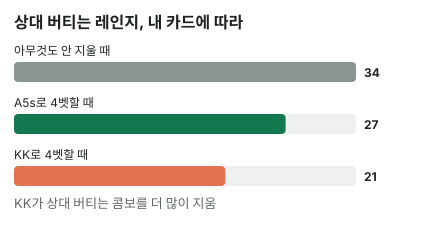

안녕하세요. A13에서 3벳 레인지를 밸류와 블러프로 나눠 콤보로 셌죠. 오늘은 한 단계 위, 4벳이에요.
4벳까지 오면 양쪽 레인지가 손가락으로 셀 만큼 작아져요. 그래서 내 손에 든 카드 두 장이 상대가 들 수 있는 핸드를 눈에 띄게 지워 버려요. 오늘은 그게 정확히 몇 콤보인지, 그리고 그게 좋은 일인지 나쁜 일인지까지 따져 볼게요.
이 글에서 배울 것
- 내 카드가 상대 콤보를 지우는 원리: "남은 장수 × 남은 장수" 하나로 세는 법
- 같은 4벳이어도 A5s·KK·QQ를 들 때 상대가 버티는 콤보가 각각 얼마나 줄어드는지
- 콤보가 줄어드는 게 블러프에는 좋고 밸류에는 아쉬울 수 있는 이유
4벳이 뭐고, 왜 콤보가 중요할까
용어 두 개
4벳 = 상대의 3벳에 다시 하는 레이즈예요. 오픈(1벳이 블라인드라 오픈을 2벳으로 셈) → 3벳 → 4벳 순서죠.
5벳 = 4벳에 또 다시 하는 레이즈예요. 100BB에서 4벳까지 오면 남은 칩이 많지 않아서, 이 글에서는 5벳을 올인으로 봐요.
결승전 명단
4벳 팟의 레인지는 결승전 명단과 같아요. 예선에는 수백 명이 있지만 결승에는 몇 명만 남죠. 사람이 적을수록 한 명이 빠지는 게 결과를 크게 바꿔요.
레인지도 그래요. 오픈 레인지는 수백 콤보라 한두 콤보가 빠져도 티가 안 나요. 그런데 4벳에 버티는 레인지는 수십 콤보뿐이라, 내 카드 두 장이 지우는 몇 콤보가 비율로는 크게 느껴져요.
1단계. 콤보를 세는 기본 규칙
아무것도 안 지울 때
카드 한 숫자는 무늬별로 4장이에요. 여기서 두 장을 고르는 경우의 수가 콤보예요.
- 포켓페어(예: AA): 4장 중 2장 → 6콤보
- 서로 다른 두 숫자(예: AK): A 4장 × K 4장 = 16콤보. 그중 같은 무늬(수딧) 4, 다른 무늬(오프수트) 12
내 카드가 있을 때: 남은 장수끼리
내가 그 숫자를 한 장 들고 있으면, 상대가 쓸 수 있는 카드가 한 장 줄어요. 그래서 "남은 장수"로 다시 세면 돼요.
- 내 손에 A 한 장: 상대 AA는 남은 A 3장 중 2장 → 3콤보. 상대 AK는 A 3장 × K 4장 = 12콤보
- 내 손에 K 두 장: 상대 KK는 남은 K 2장 → 1콤보. 상대 AK는 A 4장 × K 2장 = 8콤보
이게 무슨 뜻이냐면, 공식을 외울 필요 없이 "상대가 쓸 수 있는 카드가 몇 장 남았나"만 보면 된다는 거예요. 페어는 남은 장수에서 두 장 고르기, 서로 다른 숫자는 남은 장수끼리 곱하기예요.
💡 빨리 세는 팁: 페어는 남은 장수가 4·3·2장이면 6·3·1콤보. 서로 다른 숫자는 그냥 곱하기
2단계. 오늘 쓸 두 레인지 (가정)
우리 4벳 레인지
우리가 오픈 → 상대 3벳 → 우리가 4벳하는 장면이에요. 4벳 레인지를 이렇게 가정할게요(연습용, 솔버 결과 아님).
| 묶음 | 핸드 | 콤보 |
|---|---|---|
| 밸류 | KK+, AKs | 16 |
| 블러프 | A5s, A4s | 8 |
KK·AA가 6씩 12, AKs 4를 더해 밸류 16콤보, A5s·A4s가 4씩 블러프 8콤보예요. 이 가정 표에서는 밸류 2 : 블러프 1이에요.
상대가 4벳에 버티는 레인지
상대는 우리 4벳에 QQ+, AK로만 버틴다고(5벳 올인하거나 콜) 가정할게요. 나머지 3벳 핸드는 접어요. 아무 카드도 지우지 않으면 이래요.
QQ·KK·AA 6씩 18 + AK 16 = 34콤보
3단계. 내 카드가 지우는 콤보
같은 34콤보 레인지인데, 우리가 무엇을 들었느냐에 따라 상대 손에 남는 콤보가 달라져요.
A♠5♠(블러프)로 4벳할 때
| 상대 핸드 | 원래 | A♠5♠를 들면 | 왜 |
|---|---|---|---|
| AA | 6 | 3 | 남은 A 3장 중 2장 |
| KK | 6 | 6 | K는 안 지움 |
| 6 | 6 | Q는 안 지움 | |
| AK | 16 | 12 | A 3장 × K 4장 |
| 합계 | 34 | 27 |
34 − 27 = 7, 상대가 버틸 콤보가 일곱 개 사라졌어요. A 한 장이 AA와 AK 두 줄을 동시에 줄인 덕분이에요.
K♠K♥(밸류)로 4벳할 때
| 상대 핸드 | 원래 | K♠K♥를 들면 | 왜 |
|---|---|---|---|
| AA | 6 | 6 | A는 안 지움 |
| KK | 6 | 1 | 남은 K 2장 |
| 6 | 6 | Q는 안 지움 | |
| AK | 16 | 8 | A 4장 × K 2장 |
| 합계 | 34 | 21 |
34 − 21 = 13, 이번엔 열세 개가 사라졌어요. K를 두 장 들어서 KK와 AK를 더 많이 지운 거예요.

같은 레인지, 다른 상대
이게 무슨 뜻이냐면, 상대는 같은 전략(QQ+, AK로 버팀)을 쓰는데도 우리 손에 따라 실제로 마주하는 상대 핸드가 달라진다는 거예요. 상대 레인지를 셀 때 늘 내 카드부터 지우고 세야 하는 이유예요.
4단계. 줄어든 게 좋은 일일까, 나쁜 일일까
콤보가 줄었다는 숫자만으로는 반쪽이에요. 어떤 핸드가 줄었는지를 봐야 좋은지 나쁜지가 보여요.
블러프 A5s: 줄어들수록 좋아요
블러프 4벳은 상대가 접어야 돈을 벌어요. 지워진 게 AA와 AK, 즉 4벳에 버티는 쪽이라 일단은 좋은 방향이에요. AA는 A5s를 크게 앞서는 핸드라, 덜 만나면 콜을 받았을 때도 덜 아파요.
다만 "버티는 콤보가 줄었으니 4벳이 덜 잡힌다"는 아직 반쪽이에요. 이건 아래 '왜 그럴까'에서 접는 쪽까지 같이 세 보며 마무리할게요.
밸류 KK: 아쉬운 쪽도 있어요
밸류 4벳은 반대로 상대가 버텨 줘야 돈을 벌어요. KK가 지운 건 상대 KK(비김)와 AK예요. 그런데 AK는 KK에게 밀리면서도 4벳에 버텨 줄 핸드, 즉 돈을 내줄 상대예요. 그게 16콤보에서 8콤보로 줄었으니 밸류 입장에선 아쉬운 일이죠.
반면 KK가 무서워할 AA는 6콤보 그대로예요. K로는 A를 못 지우니까요.
블로커는 "늘 좋은 것"이 아니에요
이렇게 내 카드가 상대 콤보를 지우는 효과를 블로커라고 해요(고급 E01에서 자세히 다뤄요). 같은 블로커도 내가 상대를 접게 하려는지(블러프), 버티게 하려는지(밸류)에 따라 좋고 나쁨이 갈려요.
왜 그럴까: 블러프의 성공은 "남은 콤보"가 아니라 "접는 비율"이에요
블로커는 접는 쪽도 지워요
블러프 4벳이 얼마나 성공하는지는 상대 3벳 레인지 전체 중 몇 %가 접느냐로 정해져요. 그런데 내 카드는 버티는 쪽만 골라서 지우지 않아요. 상대 3벳 레인지에 A가 든 접는 핸드가 있으면 그것도 같이 지워요.
그래서 상대 3벳 레인지를 하나 더 가정해 볼게요. 4벳에 버티는 QQ+, AK(34콤보)에, 4벳을 맞으면 접는 JJ~TT, AQs, AJs, KQs, AQo(36콤보)를 더해 모두 70콤보예요(연습용 가정).
세 손으로 비율을 다시 세면
| 우리 손 | 접는 콤보 | 버티는 콤보 | 3벳 레인지 전체 | 접는 비율 |
|---|---|---|---|---|
| 아무것도 안 지움 | 36 | 34 | 70 | 51.4% |
| A♠5♠ | 31 | 27 | 58 | 53.4% |
| K♠K♥ | 34 | 21 | 55 | 61.8% |
A♠5♠는 버티는 쪽을 일곱 개 지웠지만, 접는 쪽의 AQ·AJs도 다섯 개 지웠어요. 그래서 접는 비율은 생각보다 조금만 올라가요.
반대로 K♠K♥는 버티는 쪽(KK·AK)을 크게 지우고 접는 쪽은 KQs 두 개만 지웠어요. 접는 비율이 가장 크게 올랐죠.
이게 무슨 뜻이냐면
블로커의 효과는 "우리 카드가 어느 쪽 핸드에 더 많이 들어 있나"로 정해져요. 오늘 가정 레인지(QQ+, AK가 버팀)에서는 버티는 쪽이 A·K 위주라 A나 K 블로커가 도움이 됐지만, 접는 쪽에도 A가 많이 들어 있으면 그 효과가 깎여요.
그래서 "콤보가 몇 개 줄었나"가 아니라 "접는 비율이 얼마나 바뀌었나"로 봐야 블러프의 손익이 보여요. 3벳했다가 4벳 올인을 맞았을 때 내 카드로 상대 레인지를 먼저 지우는 계산은 A19에서 AK로 직접 해 봐요.
자주 하는 실수
실수 1. 상대 레인지를 "외운 콤보 수"로만 셈 "QQ+, AK면 34콤보" 하고 그대로 쓰는 경우예요. 오늘 본 것처럼 우리가 A♠5♠를 들면 27, K♠K♥를 들면 21이에요. 같은 레인지라도 실제 상대 핸드 수가 많게는 열세 개까지 달라졌죠. 대신 내 카드 두 장부터 지우고 남은 장수로 다시 세요.
실수 2. 버티는 콤보만 세고 접는 비율은 안 봄 "A♠5♠면 버티는 핸드가 34에서 27로 줄었으니 블러프가 훨씬 잘 통한다"고 보는 경우예요. 그런데 접는 쪽 AQ·AJs도 같이 줄어서, 접는 비율은 51.4%에서 53.4%로 조금 오를 뿐이었어요. 대신 블러프를 볼 때는 접는 쪽까지 같이 지워서 비율로 다시 세요.
실수 3. 밸류 4벳에서도 "블로커는 좋은 것" K♠K♥는 상대 AK를 16에서 8로 지웠지만, AK는 KK에게 돈을 내줄 핸드였어요. 정작 KK를 이기는 AA는 6콤보 그대로였고요. 대신 밸류라면 "우리를 이기는 핸드가 줄었나, 돈을 내줄 핸드가 줄었나"를 나눠서 봐요.
"QQ는 왜 4벳 밸류에 없어요?"
좋은 질문이에요. QQ도 아주 센 핸드인데 오늘 가정 4벳 밸류에는 KK+, AKs만 넣었죠. 상대가 버티는 레인지로 따져 보면 이유가 보여요.
우리가 Q♠Q♦로 4벳하면 상대가 버티는 핸드는 이렇게 남아요.
- 같은 QQ: 남은 Q 2장 → 1콤보. 비기는 핸드라 에퀴티 49.9%
- QQ보다 센 KK+: K·A는 하나도 안 지워져서 6 + 6 = 12콤보. QQ는 여기에 크게 밀려요(KK 상대 에퀴티 17.6%, AA 상대 18.2%)
- QQ가 앞서는 AK: 16콤보 그대로. 다만 앞선다고 해도 AKo 상대 57.8%, AKs 상대 55.2%로 반반에 가까워요
1 + 12 + 16 = 29콤보를 합친 버티는 레인지 상대 QQ의 에퀴티는 40.7%예요. 버텨 주는 핸드에 오히려 밀리는 거죠. 이 가정에서는 QQ로 4벳하면 약한 핸드는 접고 센 핸드만 남는 구조라, QQ를 4벳 밸류보다 다른 선택지 쪽에 두는 이유로 읽을 수 있어요. 3벳을 맞은 쪽이 콜·폴드·4벳 중 무엇을 고를지는 A31에서 다뤄요.
선생님의 한마디
4벳 팟에서 상대 레인지를 셀 때 우리는 이 순서로 해요.
- 상대 레인지를 버티는 줄과 접는 줄 두 줄로 나눠 적어요
- 내 카드 두 장을 두 줄에서 모두 지우고, 남은 장수로 다시 세요
- 블러프면 접는 비율을, 밸류면 버티는 줄 안에서 내가 이기는 몫을 봐요
연습 문제
학습툴 [콤보 분류 보기]는 준비 중이에요. 표를 보며 직접 세어 보세요.
문제 1. 이번엔 우리가 A♦K♦로 4벳했어요. 상대가 QQ+, AK로 버틴다면 상대가 버티는 콤보는 모두 몇 개일까요? 그중 AA와 AK는 각각 몇 콤보일까요?
정답 보기
- AA: 남은 A 3장 → 3콤보
- KK: 남은 K 3장 → 3콤보
- QQ: 안 지워져서 6콤보
- AK: A 3장 × K 3장 = 9콤보
합계 3 + 3 + 6 + 9 = 21콤보. A와 K를 한 장씩 들면 AA·KK·AK 세 줄이 한꺼번에 줄어요. 우리를 이기는 AA·KK가 둘 다 절반으로 줄었다는 점이 KK로 4벳할 때와 달라요.
문제 2. 이번엔 반대로 상대가 4벳했어요. 상대 4벳 레인지가 오늘 2단계의 가정(KK+, AKs, A5s, A4s)과 같고, 우리 손이 K♥K♦예요. 상대 4벳 레인지의 밸류(KK+, AKs)와 블러프(A5s, A4s)는 각각 몇 콤보로 남을까요? 원래 2 : 1이던 비율은 어떻게 바뀌나요?
정답 보기
- 밸류: AA 6 + KK 1 + AKs 2 = 9콤보(AKs는 K♥·K♦ 무늬가 빠져 2)
- 블러프: A5s 4 + A4s 4 = 8콤보(K를 안 쓰는 핸드라 그대로)
밸류 16 : 블러프 8이던 레인지가 우리 눈에는 9 : 8로 보여요. KK를 들면 상대 4벳의 밸류만 줄고 블러프는 그대로라, 같은 4벳이 훨씬 블러프가 많은 레인지로 바뀌어요. 4벳을 맞은 쪽이 이런 계산으로 콜·폴드·5벳을 고르는 장면은 다음 글 A18에서 봐요.
핵심 정리
- 상대 콤보는 남은 장수로 세요. 페어는 남은 4·3·2장이면 6·3·1콤보, 서로 다른 숫자는 남은 장수끼리 곱해요
- 4벳 팟은 레인지가 작아서 내 카드 두 장이 상대 레인지의 큰 몫을 지워요(오늘 34콤보가 27·21로)
- 같은 상대 전략이라도 우리가 실제로 마주하는 레인지는 내 카드가 한 번 더 걸러 낸 것이에요
- 블러프의 성공은 남은 콤보 수가 아니라 접는 비율로 봐요. 내 카드는 접는 쪽 핸드도 같이 지워서 효과가 생각보다 작을 수 있어요
정리하며
오늘은 4벳에 상대가 QQ+, AK로 버틴다는 가정에서, 34콤보 레인지가 우리 손에 따라 A♠5♠면 27, K♠K♥면 21로 줄어드는 걸 직접 셌어요. 원리는 하나, 상대가 쓸 수 있는 카드가 몇 장 남았나였죠.
그리고 접는 쪽까지 같이 세 보니, A♠5♠의 블로커는 접는 AQ·AJs도 지워서 접는 비율이 51.4%에서 53.4%로 조금만 올랐어요. 몇 개가 줄었나보다 어느 쪽이 줄었나가 블로커의 진짜 효과예요.
다음 글 A18에서는 자리를 바꿔, 3벳했는데 4벳을 맞은 JJ의 입장이 돼요. 오늘 센 콤보로 상대 4벳 레인지를 그려 놓고, 콜·폴드·5벳 올인 중 무엇이 나은지 비교해요.
AI 작성 · 숫자는 계산 검증 (콤보는 실제 카드로 하나씩 셈, QQ 에퀴티는 프리플랍 몬테카를로) · 4벳·버티는 레인지는 연습용 가정 (솔버 결과 아님)